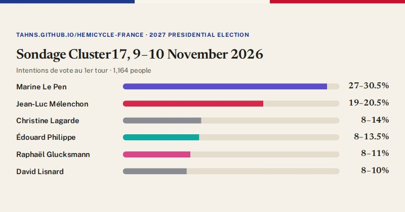

Présidentielle 2027 · sondage
Intentions de vote au 1er tour : Cluster17, enquête du 9-10 novembre 2026

| Candidat | Intentions de vote |
|---|---|
| Marine Le Pen | 27 à 30,5 % |
| Jean-Luc Mélenchon | 19 à 20,5 % |
| Christine Lagarde | 8 à 14 % |
| Édouard Philippe | 8 à 13,5 % |
| Raphaël Glucksmann | 8 à 11 % |
| David Lisnard | 8 à 10 % |
| Bruno Retailleau | 5 à 5,5 % |
| Nicolas Dupont-Aignan | 2 à 3 % |
| Éric Zemmour | 2 à 3 % |
| Natacha Polony | 2,5 % |
| Fabien Roussel | 1,5 à 2,5 % |
| Gabriel Attal | 2 % |
| Teddy Riner | 2 % |
| François Ruffin | 1,5 % |
| Marine Tondelier | 1 à 1,5 % |
| François Asselineau | 1 % |
| Dominique de Villepin | 1 % |
| Nathalie Arthaud | 0,5 % |